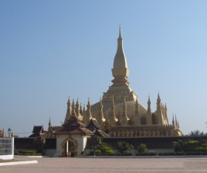
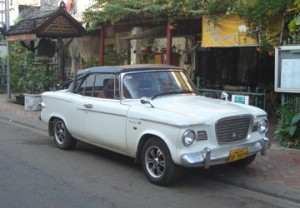
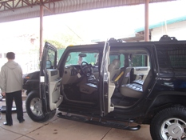

New Year 2009 in Vientiane
I have traveled through Laos four times now — once on the way to China from Thailand, once on the return from China to Thailand, twice on visa runs from Thailand — but now (Jan-Feb 2009) is the first real visit I have made. This time, I am in Vientiane waiting for an invitation letter from China to return to Chengdu, Sichuan Province where I previously worked in a kindergarten and where I am returning for the same kind of job. It has been a strange departure from Thailand — leaving a lot of emotional baggage from the past behind me. Today is Monday, the 5th of January 2009, and I’ve been here since December 30th. It is also the fourth day of an at least 10-day planned fast. I had fasted in northeastern China earlier this year in April before returning to Thailand — only to return to old habits in May, drinking again and eating junk food. Changing one’s lifestyle to include healthier diet habits is an enormously difficult task. Don’t let anyone tell you otherwise. The entirety of Western culture — the modern culture of a hedonistic way of living and pursuing self-gratification at the expense of all else is truly well established and spreading its tentacles worldwide. Swimming against the flow of that river of mass consciousness is like being caught in a rip tide in the ocean. One must swim across the current, going with it a little, in order to get back to the beach and the ‘dry’ land of a healthy lifestyle without drinking alcohol or consuming too much caffeine, refined sugar, or processed food. Every day is a temptation — fasting works for me so I’m back in that groove for as long as I can continue it. I have decided that since I’m leaving some of my emotional attachment to the past behind (nearly 3 years of life in Thailand with Burmese refugees) that now is as good a time as any to get healthier in preparation for a rocky road into the future that the world seems to be facing. My motivation is to stay healthy for my students — like the Laos kids in the picture above. They serve as my inspiration to continue struggling with life and over 10,000 of them died in the Chengdu earthquake last year in May. I am going back to China for their ‘spirits’ — young ancestors, so to speak, who were needlessly sacrificed. Many of them died because of poor quality construction in the schools that collapsed upon them. One of my former kindergarten students in Chengdu had a father who is in the construction business and I became close to his family. I am looking forward to having an interesting conversation with him.
Meanwhile, I am Vientiane, spending my time as a tourist might — walking around this capital city that reminds me so much of Kathmandu, Nepal where I lived for 9 years and picked up a Nepalese wife. Certainly, the tourist quarters of both cities are very similar. There are other similarities between Nepal and Laos that are intriguing now that Nepal has become a republic instead of a kingdom and a communist party has been elected there as the leadership of the government for the first time in history. It was a ten-year struggle for the Nepalese to make that happen. Only time will tell if it was for the good of their country or not. Today, I visited the local military museum — I took this photo of an American helicopter that never made it home from the Vietnam War.

I am only grateful that I didn’t participate in that war and don’t have to forgive myself for killing anyone in a conflict that had no real meaning. Most Americans have figured that out. The ones who haven’t don’t count for anything, in my estimation. I am not truly ‘political’ — I espouse a belief in anarchism as far as it is similar to Chinese taoism. I have written about this belief here. I have almost decided to renounce my U.S. citizenship. It is an act of ‘declaration of my free will’ that I hope to make in the not too distant future. It only requires being in the right country at the right time where I can be supported for this decision and not misunderstood.
I took a long walk today off the beaten tourist path. I found myself at one point outside the entrance to the Laos American College. I didn’t go in but stopped for a cool, refreshing drink of coconut milk at a nearby shop. A little girl about the age of the students I will soon be teaching came up to me and smiled mischievously. I don’t think she could figure out what a foreigner would be doing in her neighborhood. Behind her shop is a canal that stretches across most of the capital city parallel to the Mekong River but on the eastern edge of town. I followed this canal for a while and took a look at the local neighborhood. I could have been back in Kathmandu where I would have had a similar experience. Many of the houses and people were the same — people living within their means. Of course, Kathmandu has a river flowing through it — one of the most polluted rivers that I’ve ever seen. This canal in Vientiane wasn’t that bad although most tourists wouldn’t consider walking along it to be an attraction. The men were cleaning up the muck — something that could and should be done to the Mississippi River in the U.S.A. The Mississippi is far more polluted than either the river in Kathmandu or this canal. There is a ‘dead spot’ out in the Gulf of Mexico from where it empties out the toxic effluvia from its long journey through the ‘heart’ of the U.S.A. Is it surprising that its flow meanders through the Gulf of Mexico towards the coast of Texas? I’m immediately reminded of the previous governor of that state and our present president. I guess enough said and done there, as well. Unfortunately, I was born in New Orleans at the mouth of this sewer. But, on the other hand, my father took me back to his home in Virginia to a cleaner environment when I was still young enough to get the taste of the sewer out of my soul. Perhaps Hurricane Katrina was Mother Nature’s way of saying “enough is enough”!


 


Whether it is a stretch limousine or a Hummer — both made in America — I wonder who would spend the amount of money they cost and consider it a good investment. I wonder at the value system at work behind such a decision. If the car is meant to be bought as a status symbol for some, it works out more being a badge of idiocy in my humble opinion. I know this is hardly the usual ‘fare’ of a traveler’s blog but cars are about travel — aren’t they? When we travel — move our body — the type of vehicle we use for our personal transport has a lot to say about who we are in the world.
Think about it for a moment. Our human body is also a vehicle of sorts. Some would say it ‘houses’ our soul or spirit — take your pick of words. We also drive or operate our human body through a lifetime on this earth. I feel some of us surely never read the ‘operator’s manual’ or we’re either ‘drunk’ drivers causing mayhem in the world. People who meditate often speak about a ‘merkaba’. This is an ‘energy’ body created by the mind during focused concentration that supposedly allows one to move around in the astral realms, remote view, or see whatever other hallucination one wants to experience while in an altered state of consciousness. The goal, of course, is focusing one’s awareness within the body for production of a balanced state of emotions — kind of like having a professional chauffeur for that human body type vehicle.
More ancient meditators who practised tantric yoga may have visualized their soul/spirit as a God. There were as many gods as there were individuals practicing meditation. I’ve walked through a lot of museums and Buddhist temples these past few days. There are as many images of the Buddha as there are people using this image for balancing their emotional bodies. At least, they’re all trying to become drivers with good habits for living in this world. It is more than I can say for some who may be visualizing themselves as daemons or who have become ‘driven’ by them. Imagine a ‘psychotic’ chauffeur, if you will, or just take the example of Princess Diana’s driver — get the picture?
In Nepal, in Kathmandu, that reminds me in some ways of Vientiane, the local devotees bring out the God of Compassion — White Machendranath — each year moving him around the streets of the city. He has his own ‘chariot’ or vehicle. He doesn’t always get pulled/pushed around without vehicular accidents. It’s considered ‘bad luck’ if the chariot falls on its side (as it does sometimes). Again, it is the practice of devotion that is important. Even the best of gurus, or teachers, are ultimately only human as we all are. No matter how we imagine ourselves to be the simple truth is we’d all be better off driving that humble people’s car — the VW bug.
I won’t find such a chariot in Vientiane — this capital city is more modern than Kathmandu. Coming to Laos from Thailand was like going back in time fifty years or so. Going to Kathmandu would take me back another fifty years to an older yet culture. I imagine I would have to attend the elephant festival here in Laos next month to get a truer picture of what the past was like in this country. I don’t know yet if I’ll be present for that. An elephant is another kind of chariot all together. The Indian God Ganesh — the elephant headed one — might be a better driver than all of us. He’s not prayed to for ‘Good Luck’ for nothing, after all.
January 16, 2009
Filed under: Laos and
Leave a Reply